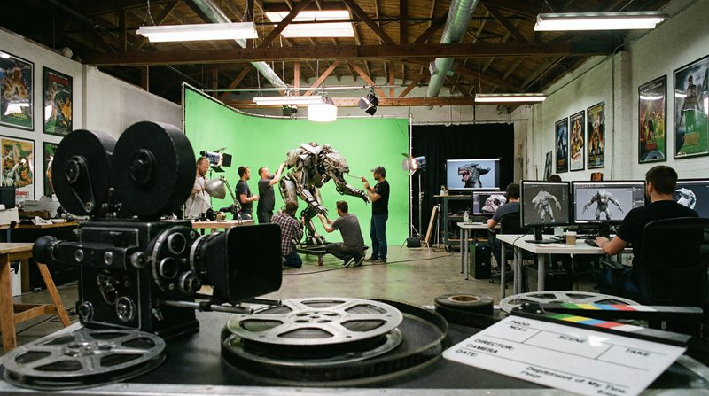

返回课程列表
第一课
绪论
电影特效与力学的不解之缘
⏱️ 约30分钟
从《星球大战》的太空战斗到《复仇者联盟》的超级英雄，电影特效的核心就是模拟真实的物理规律。即使是魔幻场景，也需要遵循力学逻辑才能让观众信服。
物理引擎与电影特效
现代CG特效依赖物理引擎来模拟真实世界的运动。粒子系统模拟爆炸和烟雾，刚体动力学模拟物体碰撞，流体力学模拟水和火焰。

经典电影中的物理模拟
好莱坞大片的力学特效：
- 《2012》：地壳运动、建筑坍塌使用刚体动力学模拟，每帧计算数百万碎片
- 《星际穿越》：黑洞视觉效果基于广义相对论方程，由物理学家基普·索恩指导
- 《复仇者联盟》：绿巨人的肌肉运动使用有限元分析模拟弹性变形
- 《加勒比海盗》：海水模拟使用Navier-Stokes方程，单帧渲染数小时
电影中的力学Bug
很多电影为了视觉效果会违反物理定律。识别这些Bug不仅有趣，还能加深对力学原理的理解。
大片中的物理穿帮
经典电影中的力学错误：
- 太空爆炸有声音：太空是真空，声波无法传播，但几乎所有太空片都有爆炸声
- 人被击飞数米：子弹动量很小，不可能把人击飞，这违反动量守恒
- 车辆爆炸翻滚：汽油燃烧不会产生足够的爆炸力让汽车翻滚
- 太空中自由转身：没有外力矩，宇航员无法像电影中那样随意转身